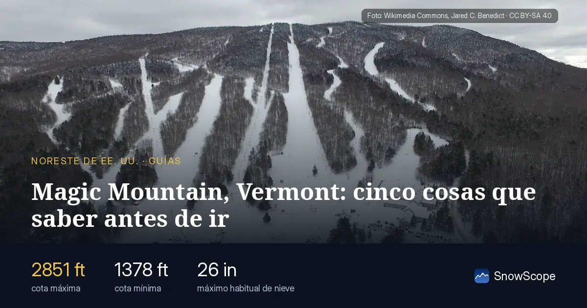

Magic Mountain, Vermont: cinco cosas que saber antes de ir
Magic Mountain es el tipo de estación de esquí que la gente describe con cariño en lugar de estadísticas: independiente, empinada para su tamaño, y orgullosa de ello. Se encuentra en Londonderry, en el sur de Vermont.
Consulta la previsión de nieve en tiempo real de Magic Mountain Ski Area en la app SnowScopeEspesor de nieve, alertas de nieve polvo y mapa 3D, gratis.
1. La nieve natural es escasa aquí, así que sigue las tormentas
El sur de Vermont no es una región de nieve profunda. En la cima de la montaña, 2.851 ft (869 m), el máximo habitual de la temporada es solo unos 26 in (67 cm), y en la base, 1.378 ft (420 m), unos 21 in (54 cm). Los inviernos varían mucho: el más delgado en nuestro registro alcanzó unos 6 in (14 cm), el más profundo cerca de la cima unos 46 in (116 cm). La producción de nieve cubre aproximadamente la mitad del terreno, así que las pistas preparadas funcionan más a menudo de lo que estos números sugieren; para los bosques, quieres nieve natural.
El mejor plan es ir en los días justo después de una buena tormenta. Esta sincronización es más importante en Magic Mountain que en grandes estaciones con más cañones de nieve y terreno. Cuando cae nieve natural, marca la diferencia entre un buen día y uno excelente, especialmente en los glades donde la nieve se mantiene más tiempo en la sombra.

2. Los glades empinados son el punto de atracción
Magic Mountain tiene la red más extensa de esquí entre árboles en el sur de Vermont, con pendientes que alcanzan 45 grados, en un desnivel de aproximadamente 1.500 ft desde una base de 1.350 ft hasta una cima de 2.850 ft. Hay 39 pistas en 205 acres. Para esquiadores seguros esa es la atracción; para principiantes, hay menos aquí que en las grandes estaciones cercanas, así que elige bien las lecciones y las pistas fáciles.
Los glades te recompensan con refugio del viento y nieve más blanda que se mantiene más tiempo en primavera. En días de poca nieve, las pistas abiertas pueden estar duras, pero los árboles siguen siendo esquiables. Por eso los esquiadores experimentados vuelven una y otra vez.
3. Diciembre es arriesgado; febrero y marzo son los mejores
Cerca de la cima un invierno típico tiene unos 6 in (14 cm) en diciembre, 11 in (28 cm) en enero y unos 17 in (43 cm) en febrero, luego unos 17 in (42 cm) en marzo. Los viajes en diciembre dependen de la producción de nieve y las noches frías; hay poco colchón si el tiempo se calienta. En la base, los números son aún más ajustados: solo 1 in (1 cm) es habitual en noviembre, 2 a 11 in (2 a 11 cm) en diciembre.
Febrero y principios de marzo dan a los árboles su mejor oportunidad. La mejor semana individual de nuestro registro, a principios de marzo, tiene al menos 20 in (50 cm) en la cima en la mitad de todos los inviernos. A finales de invierno, la base tiene 2 a 31 in (2 a 31 cm) acumulados, y la cima a menudo se sitúa por encima de 50 in (127 cm). Ese es el momento en que deberías reservar tu viaje.
4. Sube por la Red Chair al menos una vez
La Red Chair es un remonte doble fijo construido en 1971, lento y un poco frío, y parte de la identidad de la montaña. Desde 2020 el Black Line Quad ofrece una segunda forma de subir. En un día frío y ventoso, vístete para un viaje largo: una protección facial y guantes cálidos marcan una gran diferencia.
El viento importa más que el termómetro en el lado expuesto de la montaña. Un cuello de forro polar o un pasamontañas y un casco que cubra tus orejas protegen tu piel. Lleva calentadores químicos y guantes de repuesto en una pequeña mochila; los guantes mojados se congelan en el remonte, y un par seco en la comida hace posible la tarde.
5. La nieve aquí se ha mantenido estable
El instructor de esquí suizo y cineasta Hans Thorner fundó la estación porque el terreno le recordaba a los Alpes de su tierra. La montaña cerró en 1991, reabrió en 1997, y tuvo dificultades con varios propietarios antes de que Ski Magic LLC la reabriera a finales de diciembre de 2016. Pequeñas montañas como esta sobreviven gracias a sus clientes habituales y su terreno empinado.
En nuestro registro su nieve no ha disminuido. La mediana máxima cerca de la cima fue de unos 21 in (54 cm) en nuestros primeros quince inviernos y unos 25 in (63 cm) en los últimos quince. El invierno pasado, 2025-26, fue aproximadamente normal con unos 26 in (66 cm). Esta estabilidad es rara en el sur de Nueva Inglaterra y habla de la ubicación de la montaña en las Green Mountains.
Qué empacar para Magic Mountain
Las capas base finas y de secado rápido (lana o sintético, nunca algodón) te permiten mantenerte seco durante el día y regular el calor en el remonte. Una capa media cálida y una chaqueta resistente al viento atrapan el calor y bloquean el viento que importa más que el termómetro. Las capas te permiten abrirte en la larga bajada y cerrarte de nuevo en el remonte.
Lleva gafas con lente para luz baja; los días grises son comunes en Vermont. Una segunda lente o un par de gafas de sol ayuda en los días de primavera soleados. Ten los cantos afilados antes del viaje, o alquila esquís que hayan sido revisados recientemente. Con un manto de nieve más delgado, un deshielo y una congelación endurecen la superficie rápidamente, y los cantos afilados marcan la diferencia entre el control y el derrape.
Consejos para esquiadores
- Ve en los días justo después de una buena tormenta, especialmente para los glades. La nieve natural es escasa aquí y se funde rápido.
- Reserva tu viaje para febrero o principios de marzo. Diciembre depende de la producción de nieve; finales de invierno da a los árboles la mejor oportunidad.
- Vístete en capas y lleva una protección facial, guantes cálidos y calentadores químicos. El viento en la Red Chair puede ser feroz.
- Lleva gafas para luz baja y una segunda lente para días soleados. La superficie de nieve se endurece rápidamente cuando es delgada.
- Consulta el boletín oficial de aludes en avalanche.org antes de irte fuera de pista, y confirma que la estación esté abierta el día que planeas visitar.
Sobre estas cifras
Los espesores de nieve de las estaciones son la nieve más profunda en las pistas altas en la fecha indicada; son estimaciones para una zona, no una medida en un punto. Las previsiones pueden cambiar. Consulta siempre el boletín oficial de aludes antes de salir fuera de pista.
Boletines oficiales de aludes: avalanche.org (US national portal)
Citar este informe
Para investigación, docencia o prensa: cifras y gráficos reutilizables libremente bajo CC BY 4.0 con esta cita.
SnowScope (2026), Magic Mountain, Vermont: cinco cosas que saber antes de ir, https://snowscope.app/blog/es/2026/11/magic-mountain-vermont-five-things-before-you-go.html, consultado el 2026-11-09
SnowScope (Atlas Labs). (2026, November 9). Magic Mountain, Vermont: cinco cosas que saber antes de ir. SnowScope snow reports. https://snowscope.app/blog/es/2026/11/magic-mountain-vermont-five-things-before-you-go.html
BibTeX
@misc{snowscope2026magicmountainvermontfive,
author = {{SnowScope (Atlas Labs)}},
title = {Magic Mountain, Vermont: cinco cosas que saber antes de ir},
year = {2026},
month = nov,
howpublished = {\url{https://snowscope.app/blog/es/2026/11/magic-mountain-vermont-five-things-before-you-go.html}},
note = {Published 2026-11-09 16:24 UTC; accessed 2026-11-09}
}· CC BY 4.0 · Métodos, datos y herramientas →
Sigue Magic Mountain Ski Area
Gratis: un aviso cuando llega la nieve y la previsión cada mañana.